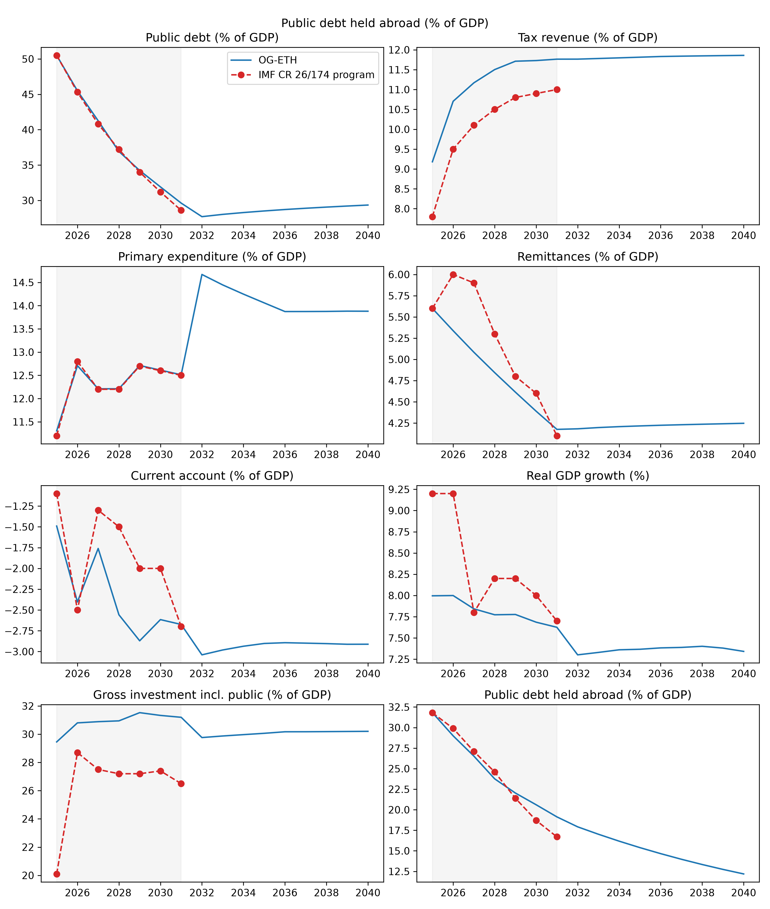
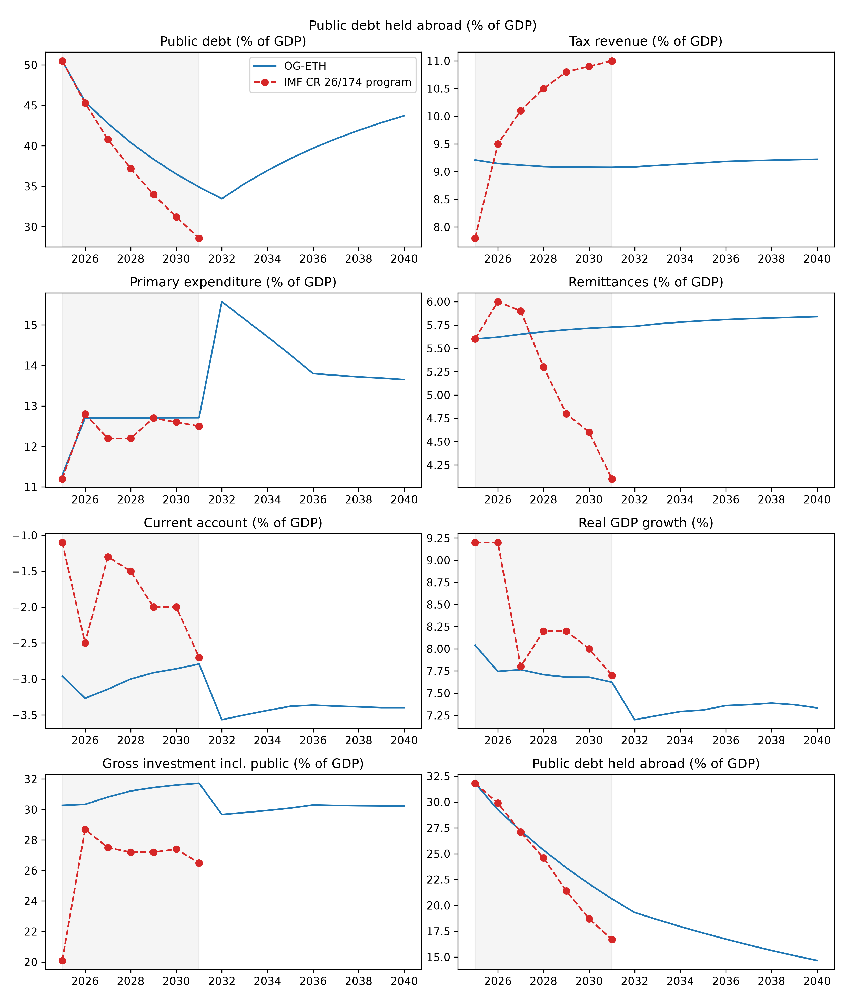

Calibration of Macroeconomic Parameters#
Calibration vintage and refresh policy#
The macroeconomic parameters below are calibrated to Ethiopian fiscal year 2024/25 (Ethiopian FY runs 8 July–7 July, so FY2024/25 ended 7 July 2025), which is the OG-ETH model start year of 2025. This is the first full-year vintage that reflects the July 2024 exchange-rate float, and it materially changes the debt block relative to the pre-float FY2023/24 numbers used in earlier calibrations.
Following the approach used in the sibling models OG-PHL and OG-IDN, only parameters whose documented source is genuinely a live data feed are refreshed when Calibration(update_from_api=True) runs. For OG-ETH that is g_y_annual (World Bank WDI) and gamma (UN ILOSTAT). Every other parameter on this page is a documented, point-in-time value held in ogeth_default_parameters.json so that a live update cannot silently overwrite a value sourced from a report table or a national statistical office. In particular the World Bank Quarterly Public Sector Debt pull and the IMF Government Finance Statistics pull are switched off (the QPSD database has no Ethiopia coverage, and the IMF SDMX endpoint returns only 2002-vintage data for Ethiopia).
A note on GDP rebasing. All ratios on this page sit on Ethiopia’s 2015/16-base national accounts. The Ministry of Planning and Development and the IMF program both schedule a national-accounts rebasing for late 2026 (base year 2024/25 or 2025/26). Because services are widely thought to be undermeasured, the rebasing is expected to raise the nominal-GDP level, which would mechanically shrink every ratio here (debt/GDP, transfers/GDP, government consumption/GDP, the effective consumption-tax rate). The calibration should be revisited once the rebased accounts are published.
Economic Assumptions#
As the default rate of labor-augmenting technological change, \(g_y\), we use a value of 4.7%. This is the average annual growth rate of GDP per capita in Ethiopia over 2016–2025, according to data from the World Bank (series NY.GDP.PCAP.KD).
\(g_y\) is the permanent balanced-growth-path rate of labor-augmenting technical change, so it should reflect Ethiopia’s sustainable long-run growth rather than a historical episode. We deliberately do not use the longer 2006–2024 window, whose ~6.0% average embeds the 2004–2015 state-led investment boom that the IMF Country Report 26/20 Debt Sustainability Analysis explicitly assumes will not repeat (“growth slower than historical rates of around 10 percent per annum over the two decades prior to 2019”). The post-2015 decade averages over the post-boom normalization, the 2020–2022 conflict-and-COVID dip, and the recent gold-export-driven recovery, giving a more defensible long-run anchor. The IMF’s own medium-term path (~8% real GDP growth) implies roughly 5.6% per-capita growth on UN population projections, which we treat as a program-optimistic upper bound rather than the balanced-growth rate.
Open Economy Parameters#
Foreign holding of government debt in the initial period#
The path of foreign holding of domestic debt is endogenous, but the initial-period stock of debt held by foreign investors is exogenous. We set initial_foreign_debt_ratio = 0.63 using the external share of public and publicly guaranteed (PPG) debt at end-June 2025 (FY2024/25). The Ministry of Finance Public Sector Debt Statistical Bulletin No. 56 (Feb 2026), Table 25, reports external debt of USD 34.09 billion against total public debt of USD 53.20 billion (64.1 percent), and the joint World Bank–IMF Debt Sustainability Analysis for the fourth ECF review puts the external share at 62.9 percent of PPG debt. The July 2024 float (the birr moved from about 57 to about 135 per US dollar) mechanically raised the birr value of external debt, so the foreign share jumped from about 45 percent (FY2023/24) to about 63 percent (FY2024/25).
Foreign purchases of newly issued debt#
We set \(\zeta_D = 0.15\), the share of newly issued government debt held by foreign creditors. The FY2024/25 realized flow is an outlier: net external borrowing of about 1.0 percent of GDP against net domestic financing of about 0.2 percent (a foreign share above 80 percent) reflected a one-off surge of IMF and World Bank budget support combined with a debt-service standstill during the restructuring, per the World Bank Inclusive Growth DPO Program Document (May 2026), Table 2. Over the medium term the DSA projects net external financing falling back toward zero (and turning negative as amortization resumes) while net domestic financing shifts toward market-based instruments, so the foreign share of net new issuance settles well below the FY2024/25 outlier. We set \(\zeta_D = 0.15\) as the long-run value, between that near-zero steady-state share and the concessional-external dependence that persists through the transition. Along the program \(\zeta_D\) is a path: with debt falling, it is the share of each year’s debt reduction borne by external creditors, and the IMF’s external and domestic debt paths ([International Monetary Fund, 2026], Table 1: external 31.8 → 16.7, domestic 18.7 → 11.9 percent of GDP) put that share at 0.37, 0.62, 0.69, 1.0, 0.96 and 0.77 for FY2025/26–FY2030/31 — amortization to external creditors carries most of the adjustment — after which it returns to 0.15 (macro_params.program_zeta_D_path). With the constant 0.15 the model’s external debt had fallen only to 20 percent of GDP by FY2030/31.
Foreign holdings of excess capital#
We set \(\zeta_K = 0.16\), anchored on Ethiopia’s normalized Chinn-Ito capital-account-openness index, which is 0.162 in the 2023 vintage and flat since the 1990s (the Chinn-Ito KAOPEN dataset). This places Ethiopia in the second-lowest openness bin, just above fully-closed economies and well below the investment-grade siblings OG-PHL (0.45) and OG-IDN (0.42). It is cross-checked against the flow evidence: foreign direct investment of about USD 4.0 billion in FY2024/25 (Ethiopian Investment Commission) against gross fixed capital formation of about 20 percent of a roughly USD 126 billion economy implies foreign financing of new capital in the low-teens percent (about 11–16 percent depending on the window), consistent with \(\zeta_K\) near 0.16. Ethiopia is a near-closed capital account: the IMF Annual Report on Exchange Arrangements and Exchange Restrictions documents binding foreign-exchange controls until the July 2024 reform, no resident access to international portfolio markets, and only nascent foreign participation via the Ethiopian Securities Exchange (launched January 2025) and the 2024 banking-sector opening. The value is a modest reduction from the previous 0.20, moving the model’s steady-state foreign-owned capital share toward the low level implied by Ethiopia’s international investment position.
World interest rate#
We set world_int_rate_annual = 0.063, the required real return of foreign investors in Ethiopian capital. In OG-Core the world rate is not a portfolio benchmark: it fixes \(K^{open}\), the capital stock firms would demand at that return, and foreign capital fills a share \(\zeta_K\) of the gap between it and what domestic wealth finances, \(K_f = \zeta_K\,(K^{open} - K_d)\). At the 4 percent risk-free benchmark used before, \(K^{open}\) was about 4.5 times GDP and the model’s foreign-owned capital stock settled at 0.37 of GDP, half again the ~0.24 inward-FDI stock in the data. Foreign direct investment in a frontier market like Ethiopia earns — and is only supplied at — a much higher return than the risk-free rate: UNCTAD’s World Investment Report 2018 measures the rate of return on inward FDI in Africa at 6.3 percent in 2017 (down from 12.3 percent in 2012). At 6.3 percent the foreign-owned capital stock comes out near the FDI stock. Ethiopia is a distressed sovereign (it defaulted on its single Eurobond and is still restructuring), so the “risk-free rate plus a small sovereign spread” logic used for the investment-grade siblings OG-PHL and OG-IDN does not apply to its debt; the sovereign’s cost of funds is calibrated separately below.
Government Debt, Spending and Transfers#
Government Debt#
The path of government debt is endogenous, but the initial value and the steady-state (long-run) value are exogenous. To avoid converting between model units and birr, we calibrate the initial debt-to-GDP ratio rather than the birr value of the debt. This is the model parameter \(\alpha_D\); the parameter name in ogeth_default_parameters.json is initial_debt_ratio.
We set initial_debt_ratio = 0.505, public debt at end-June 2025 (FY2024/25) in the IMF’s fifth ECF review ([International Monetary Fund, 2026], Table 1). This is a sharp increase from 35.5 percent in FY2023/24, and the increase is almost entirely valuation: the July 2024 float raised the birr value of external debt, lifting external debt from 15.8 to 31.8 percent of GDP while domestic debt fell from 19.7 to 18.7 percent. The debt block is therefore calibrated on the post-float basis throughout.
The steady-state debt-to-GDP ratio depends on the scenario (Two baselines: history-anchored and program). The packaged history-anchored baseline sets debt_ratio_ss = 0.505, the measured FY2024/25 ratio: the long-run anchor is a measurement, and OG-Core’s closure rule stabilizes debt where it starts rather than at a plan. The program scenario sets it to 0.30, the IMF program’s medium-term path — the fifth review projects public debt declining from the FY2024/25 peak to 34.0 percent of GDP by FY2028/29 and 28.6 percent by FY2030/31 — a value below the 35 percent present-value benchmark used for weak debt-carrying-capacity countries under the IMF–World Bank debt sustainability framework, which is the constraint the program is built around.
In both scenarios OG-Core’s debt-closure rule, which adjusts government consumption toward debt_ratio_ss, starts at tG1 = 7 (FY2031/32). Before that the baseline holds its inputs at the FY2025/26 budget values and lets debt fall or rise as the budget identity dictates; the program scenario imposes the program’s spending, revenue, grant and interest paths for FY2024/25–FY2030/31 (model periods 0–6), so that how it gets from 0.505 to 0.30 is calibrated too (The program scenario: the program path and the transition).
Interest rates on government debt#
We assume a wedge between the real rate of return on private capital and the real interest rate on government debt. OG-Core models this as a scale term, a level shift, and (optionally) a debt-elastic premium:
where \(\tau_d\) is the scale parameter (r_gov_scale), \(\mu_{d,t}\) is the level shift (r_gov_shift, a time path), and \(\beta_1\) (r_gov_DY), \(\beta_2\) (r_gov_DY2) govern the debt-elastic premium. The scale is set to 0.245 by inverting the estimated relationship between corporate and sovereign yields in [Li et al., 2023] (Table 8, Column 2): we simulate corporate yields for sovereign yields between 2 and 12 percent and estimate the scale and shift that best fit these simulated data by ordinary least squares (reproduced by ogeth.macro_params.estimate_r_gov). The level, however, is anchored to Ethiopia’s actual real effective interest rate on public debt rather than to the cross-country intercept, because it multiplies the whole debt stock in the government’s interest bill and so decides what primary balance the debt path requires.
Ethiopia’s effective interest rate on public debt is far below the model’s return on capital. Most of the debt is concessional external debt (new FY2024/25 commitments carried an average interest rate of 0.77 percent with a 52 percent grant element, per MoF Bulletin No. 56, Table 12), and the domestic paper has carried administered rates well below inflation. The program’s own numbers make the point: interest payments of 0.8 percent of GDP on a debt stock of 50.5 percent in FY2024/25 are a 1.6 percent nominal effective rate against a GDP deflator of 17 percent, and even by FY2030/31 the projected 5.2 percent nominal effective rate (1.5 percent of GDP on 28.6 percent debt) sits below the projected 8.6 percent deflator ([International Monetary Fund, 2026], Tables 1 and 2b). In a real model this shows up as a negative real effective rate on the legacy debt, which is precisely what lets the program’s debt ratio fall by 22 points of GDP with primary balances that never exceed half a percent of GDP.
We therefore calibrate \(\mu_{d,t}\) as a path. For the program years the real effective rate that reproduces the IMF debt path given the program’s primary balances and the model’s growth follows from the debt identity: with detrended debt evolving as \(d_t = \left[(1+r_{gov,t})d_{t-1} - pb_{t-1}\right]/\left(e^{g_y}(1+g_{n,t})\right)\), the implied rate is \(r_{gov,t} = (d_t\,e^{g_y}(1+g_{n,t}) + pb_{t-1})/d_{t-1} - 1\), which runs from about −3.5 percent in FY2025/26 to −1.4 percent in FY2030/31 (macro_params.implied_real_rate_on_debt). The calibrated \(\mu_{d,t}\) path puts \(r_{gov}\) on exactly these rates. Whether the model can follow them depends on the installed OG-Core: (4) clips the sovereign rate at a floor (r_gov_floor, a parameter since PSLmodels/OG-Core#1203, hard-coded at zero before it), and the example lowers the floor to −10 percent where the parameter exists so the negative program rates bind. With the floor at zero the rate sits at zero through the program years instead, and the debt ratio declines more slowly than the program’s — to about 36 rather than 29 percent of GDP by FY2030/31 — before the closure rule takes it to target; that gap is the inflation tax on domestic debt holders and the below-market terms on external debt, which a real model with a non-negative real rate leaves out. The project’s uv environment pins an OG-Core build that has the parameter (see Initial household wealth), and the results on this page use it. After the program the rate converges linearly over four periods to a long-run 2 percent — a judgment between the still-negative program-horizon rate and the 4–5 percent the LMW intercept would imply, reflecting inflation settling at the authorities’ single-digit objective and domestic financing moving to market terms. The steady-state \(r_{gov}\) of 2 percent, against a return on capital near 4.4 percent, implies a debt-stabilizing primary balance of \((r_{gov}-g)/(1+g)\cdot\bar{D} \approx -1.3\) percent of GDP, i.e. the steady state can run a modest primary deficit.
Following OG-PHL and OG-IDN, we also turn on a debt-elastic sovereign premium — the crowding-out-via-risk channel that a distressed sovereign like Ethiopia faces but that OG-Core leaves off by default. We use the convex form of [], \(\beta_2\left(D_t/Y_t - \bar{D}\right)^2\) with \(\beta_2 = 0.04\), and center it on the steady-state debt ratio \(\bar{D} =\) debt_ratio_ss \(= 0.30\) so the premium is exactly zero at the target and does not move the steady state; it only prices deviations of debt from target. Expanding the square and folding the constant into the level shift (OG-Core subtracts r_gov_shift) gives
evaluated at the program debt ratios \(d_t\) for the program years and at \(\bar{D}\) thereafter, with \(\bar{r}\) the steady-state return on capital (the transition’s \(r\) starts about 1.8 percentage points above its steady state, which the 0.245 scale turns into a sovereign rate of about 0.4 rather than 0 percent in the first program years). The sign of the last term follows from OG-Core’s formula, \(\beta_1 d + \beta_2 d^2 = \beta_2(d-\bar{D})^2 - \beta_2\bar{D}^2\): the shift must subtract \(\beta_2\bar{D}^2\) to cancel the expansion’s constant. (The earlier calibration added it, which had put the long-run sovereign rate about 0.7 percentage points below the level it documented.) The path is built by macro_params.r_gov_shift_path and pinned by tests/test_fiscal_program.py.
Aggregate transfers#
\(\alpha_T\) is the ratio of cash transfers to households to GDP. The IMF’s general-government accounts bundle these into recurrent spending together with the wage bill, goods and services and interest, so the household-transfer part has to be built up from its components ([International Monetary Fund, 2026], ¶9, ¶20–22 and the social-safety-net box): explicit fuel and fertilizer subsidies of about 1 percent of GDP in FY2024/25 — fuel subsidies were effectively eliminated by March 2026, with a capped envelope in FY2026/27 to smooth the 2026 oil-price shock, while fertilizer imports (about 1 percent of GDP) remain subsidized — the government’s contribution to the Productive Safety Net Program (about 0.4 percent of GDP; the ETB 60 billion FY2026/27 allocation), and public pension payouts of roughly half a percent of GDP. We set the path \(\alpha_T\) = 2.0, 1.8, 1.5 percent of GDP for FY2024/25–FY2026/27 and 1.5 percent thereafter.
The transfers are targeted, not spread evenly. OG-Core’s eta matrix allocates aggregate transfers across ages and lifetime-income groups and defaults to population shares; we build it by programme (macro_params.transfer_eta): the safety net (0.4 percent of GDP) goes per capita to the poorest quarter of households, the fertilizer subsidy (0.6 percent) per capita to the bottom 70 percent — smallholder agriculture — and pension payouts (0.5 percent) to retired households in the two formal groups. The fourth and fifth groups receive nothing, and the poorest quarter receives 41 percent of transfers rather than its 25 percent population share. The composition is the long-run one; the fuel subsidy that inflates FY2024/25–FY2025/26 is spread with the rest.
The IMF’s poverty-reducing expenditure line (2.3 rising to 3.5 percent of GDP) is not a household transfer: it is education, health, agriculture, roads and water spending, which in the national accounts is government consumption and public investment and is therefore already inside \(\alpha_G\) and \(\alpha_I\). Likewise the federal block grant to the regions (about 1.8 percent of GDP) is an intergovernmental transfer, not a household one.
Government expenditures#
\(\alpha_G\) is government consumption of goods and services relative to GDP. We take it from the same general-government cash accounts as the rest of the fiscal block, so that the government budget identity the debt path obeys is the one the data describe: recurrent expenditure net of interest (which the model pays through \(r_{gov}\)) and net of the cash transfers in \(\alpha_T\). From [International Monetary Fund, 2026], Table 2b, this gives 4.3 percent of GDP in FY2024/25, rising to 5.1, 5.2, 5.7, 5.8, 5.9 and 5.9 percent through FY2030/31 as the FY2025/26 budget restores real public-sector wages, and 5.9 percent thereafter. The long-run value is close to the 5.8 percent that the World Bank general government final consumption expenditure (% of GDP) series (NE.CON.GOVT.ZS) reports for 2025 on a national-accounts basis; the cash-accounts figure for FY2024/25 is lower because the wage bill was still depressed in real terms after the float. Public investment is calibrated separately via \(\alpha_I\), which follows the program’s capital expenditure — 5.0, 5.8, 5.5, 5.0, 5.4, 5.2 and 5.1 percent of GDP — and is held at 5.1 percent (see Calibration of Firm Parameters for the public-capital block).
The three spending paths together reproduce the program’s primary expenditure (total expenditure less interest) to within a tenth of a percent of GDP in every program year, which tests/test_fiscal_program.py checks.
A note on federal versus general government. Ethiopia is a federation, and the regional states execute much of the pro-poor spending and most of the education and health wage bill, financed largely by a federal block grant (about ETB 214 billion, ~1.8 percent of GDP, in FY2023/24 — an intergovernmental transfer, not a household transfer, and correctly excluded from \(\alpha_T\)). The fiscal figures used here are the IMF/World Bank general-government aggregates, which consolidate federal and regional accounts. Separately, much of Ethiopia’s public investment historically ran off-budget through state-owned enterprises, so general-government spending (~12 percent of GDP) understates the broader public sector — which is why public-sector debt is ~50 percent of GDP while on-budget spending looks small. \(\alpha_I\) here is the on-budget general-government figure.
Foreign aid#
Ethiopia is one of the world’s largest aid recipients, and on-budget grants to the government were 1.7 percent of GDP in FY2024/25, elevated by post-reform donor budget support. OG-Core’s alpha_FA parameter routes foreign aid to the domestic government as a share of GDP: it is a government resource (it funds spending and reduces the deficit) and an external inflow in the resource constraint. It accepts a time path, and we set it to the program’s grants — 1.7, 1.3, 0.9, 0.3, 0.3, 0.3 and 0.1 percent of GDP for FY2024/25–FY2030/31 ([International Monetary Fund, 2026], Table 2b) — and to 0.3 percent of GDP in the long run, a level a low-income country like Ethiopia is likely to keep receiving after the program’s donor surge fades.
Two baselines: history-anchored and program#
A calibration has to assume something about every fiscal and external input in every future year. Measured history and the start year pin down only the starting values; for the years after, “hold at the start-year value” is as much an assumption as “follow the program”. OG-ETH therefore ships two baselines built from the same data and the same household calibration, and reports both.
The history-anchored baseline is the packaged default (ogeth_default_parameters.json; macro_params.history_anchored_params). Every input takes an official outturn or enacted value and is held there: the FY2024/25 outturn for model period 0 and the enacted FY2025/26 budget for period 1 ([International Monetary Fund, 2026], Table 2b, the budget-year column), then the budget-year value for the long run. The income tax uses the statutory schedule in force, Proclamation 1395/2025 from FY2025/26, because it is law; nothing else that the program projects — revenue measures, base broadening, the decline of grants, the borrowing mix, the fall in remittances, the debt target — is imposed. Debt, growth, the current account and the trade balance are model outcomes, compared with the IMF projections below but not fitted to them. Two inputs are forward-looking by necessity and are stated as such: the real effective rate on debt holds the value the FY2024/25 outturn and the FY2025/26 budget imply for the stock (−3.5 percent, from the debt identity in The program scenario: the program path and the transition) for the program horizon and then converges to the 2 percent long-run rate over four years, because the stock’s nominal terms are fixed and inflation is a known outturn for the first years; and the foreign share of new borrowing is 0.15 throughout, the medium-term flow the debt sustainability analysis projects, because the FY2024/25 realized flow is a restructuring-year outlier and the 0.63 stock share is a poor guide to new borrowing while external debt is being restructured (see Foreign purchases of newly issued debt above).
The program scenario (macro_params.fiscal_program_params; python examples/run_og_eth.py --scenario program, results under examples/OG-ETH-Example/program) is the calibration described in the next section: the IMF fifth-review program’s spending, revenue, grant, borrowing and remittance paths imposed for FY2024/25–FY2030/31 and held, and the long-run debt ratio at the program’s 30 percent. For a country under an ECF arrangement it is a legitimate reading of current policy, and it is the version to use when the question is what the program delivers. Its debt path matches the IMF’s largely by construction — revenue and interest paths were built to reproduce it — so that match shows the fiscal block is internally consistent, not that the model independently reproduces Ethiopia; the history-anchored baseline is where the model’s own findings can be read.
Input |
History-anchored baseline (packaged) |
Program scenario |
Source |
|---|---|---|---|
|
4.3, 1.5, 5.0 (FY2024/25); 5.1, 1.3, 5.8 (FY2025/26 budget), held |
program path FY2024/25–FY2030/31, then held |
IMF CR 26/174, Table 2b |
|
1.7; 1.3 (budget), held |
1.7 → 0.1 over the program; 0.3 long run |
IMF CR 26/174, Table 2b |
|
0.060, 0.327 held |
0.060 → 0.078, 0.327 → 0.472 |
IMF program revenue path |
Income-tax compliance |
FY2024/25 calibration held |
broadens over the program (Taxes in OG-ETH) |
IMF CR 26/174, p. 15 |
Income-tax schedule |
Proclamation 979/2016 in FY2024/25, 1395/2025 from FY2025/26 |
same |
law |
|
0.15 throughout |
program external/domestic split, then 0.15 |
IMF DSA; CR 26/174, Table 1 |
|
0.505 (measured FY2024/25) |
0.30 (program) |
IMF CR 26/174, Table 1 |
Real rate on debt |
−3.5% (budget-implied) held 7 years, then → 2% |
program-implied path (−3.5 to −1.4%), then → 2% |
debt identity |
|
0.056, 0.056 |
0.056 → 0.041 over the program, held |
IMF CR 26/174, Table 4b |
|
7 |
7 |
macro_params.scenario_params(p, scenario) builds either set from the same tables, update_baseline.py writes the packaged one, and tests/test_fiscal_program.py pins both.
The program scenario: the program path and the transition#
In the program scenario the fiscal block follows the IMF fifth-review program for its seven fiscal years (FY2024/25 is model period 0, the 2025 start year) and holds the last value thereafter; OG-Core’s closure rule, which adjusts government consumption to bring debt to debt_ratio_ss, starts at tG1 = 7 (FY2031/32). Revenue follows the program too: the model’s tax revenue rises by the same percentage points of GDP as the IMF revenue line (9.2 to 12.3 percent). About 0.7 points come from the formalization path in Taxes in OG-ETH — income-tax compliance improving in the fifth and sixth lifetime-income groups — and the remainder is split 60/40 between consumption taxes (tau_c 0.060 → 0.082, the VAT reform, excise and customs measures) and corporate-tax collections (adjustment_factor_for_cit_receipts 0.327 → 0.511, tax administration), following the direct-tax-heavy composition of the FY2025/26 outturn. The payroll tax is unchanged. The table gives the program values and the parameters they map to; all paths are derived from the IMF tables by ogeth.macro_params and rebuilt by update_baseline.py.
Fiscal year (model period) |
24/25 (0) |
25/26 (1) |
26/27 (2) |
27/28 (3) |
28/29 (4) |
29/30 (5) |
30/31 (6) |
long run |
|---|---|---|---|---|---|---|---|---|
Public debt, IMF (% GDP) |
50.5 |
45.3 |
40.8 |
37.2 |
34.0 |
31.2 |
28.6 |
30.0 (target) |
Revenue excl. grants, IMF (% GDP) |
9.2 |
10.8 |
11.4 |
11.8 |
12.1 |
12.2 |
12.3 |
12.3 |
Primary expenditure, IMF (% GDP) |
11.2 |
12.8 |
12.2 |
12.2 |
12.7 |
12.6 |
12.5 |
12.5 |
|
4.3 |
5.1 |
5.2 |
5.7 |
5.8 |
5.9 |
5.9 |
5.9 |
|
1.5 |
1.3 |
1.0 |
1.0 |
1.0 |
1.0 |
1.0 |
1.0 |
Pension benefits (% GDP), paid by the scheme |
0.5 |
0.5 |
0.5 |
0.5 |
0.5 |
0.5 |
0.5 |
0.5 |
|
5.0 |
5.8 |
5.5 |
5.0 |
5.4 |
5.2 |
5.1 |
5.1 |
|
1.7 |
1.3 |
0.9 |
0.3 |
0.3 |
0.3 |
0.1 |
0.3 |
\(\zeta_D\) (external share of debt change) |
0.37 |
0.37 |
0.62 |
0.69 |
1.00 |
0.96 |
0.77 |
0.15 |
Non-compliance, groups 5 / 6 |
1 / 0.5 |
0.97 / 0.42 |
0.93 / 0.33 |
0.9 / 0.25 |
0.87 / 0.17 |
0.83 / 0.08 |
0.8 / 0 |
0.8 / 0 |
|
0.060 |
0.073 |
0.077 |
0.079 |
0.080 |
0.079 |
0.078 |
0.078 |
CIT collections factor |
0.327 |
0.434 |
0.465 |
0.480 |
0.488 |
0.480 |
0.472 |
0.472 |
Implied real rate on debt (%) |
— |
−3.5 |
−3.7 |
−1.1 |
−1.5 |
−1.8 |
−1.4 |
2.0 |
The figure compares the program scenario’s transition (examples/run_og_eth.py --scenario program) with the program path for the moments it imposes and for the ones it does not. Model periods 0–6 sit on the program values by construction where a parameter is imposed (spending, and the remittance share, which glides from the measured level to the program endpoint); revenue, debt, the current account and growth are model outcomes. The history-anchored baseline’s transition is compared with the same program numbers in Fig. 4 under Steady-state validation.


Fig. 3 OG-ETH program scenario against the IMF fifth-review program path. Shaded years are the program horizon over which the fiscal paths are imposed.#
Initial household wealth#
The transition starts from a predetermined stock of household wealth. By default OG-Core sets it to the steady-state level, which for Ethiopia would mean starting the economy with the capital stock it will only reach after decades of catch-up. Where the installed OG-Core supports it (PSLmodels/OG-Core#1189, initial_wealth_ratio), the example anchors aggregate initial wealth to the data instead: household wealth in the model is domestically owned capital plus domestically held government debt, so its data counterpart is the Penn World Table capital-output ratio of about 2.2, less the inward FDI stock of about 0.24 of GDP (UNCTAD), plus domestically held public debt of 18.7 percent of GDP (50.5 less 31.8 external; [International Monetary Fund, 2026], Table 1) — a ratio of 2.15 to steady-state GDP, against a steady-state wealth-to-GDP ratio near 3.1. The value lives in ogeth.macro_params.INITIAL_WEALTH_RATIO and is applied by the example only when the parameter exists, so the packaged calibration keeps loading with the released OG-Core; it moves into ogeth_default_parameters.json once an OG-Core release carrying the parameter is the project’s floor. Until then the project’s uv environment pins OG-Core to a build with both this parameter and r_gov_floor — OG-Core master merged into the #1189 branch, on marcelolafleur/OG-Core (integrate/master-plus-1189) — via [tool.uv.sources] in pyproject.toml, so uv sync followed by uv run python examples/run_og_eth.py reproduces the results on this page; a pip install ogeth gets the released OG-Core and the two fallbacks the example announces.
Remittances#
Remittances are a defining feature of Ethiopian household income, and the model calibrates their level, their growth along the transition, and how they are shared out across households. The theory is in the OG-Core chapter “Remittances”.
Level#
The IMF’s fifth ECF review ([International Monetary Fund, 2026], Table 4a) records net private transfers of USD 7,037 million in FY2024/25 — 5.6 percent of GDP, larger than FDI — the first full post-float year and the vintage the rest of this page uses. We set alpha_RM_1 = 0.056, the measured value, and alpha_RM_T = 0.041, the program’s FY2030/31 projection, held for the long run like the other program series. The World Bank WDI personal-remittances series (the BPM6 measure: personal transfers plus compensation of employees) puts the same inflow at USD 7.14 billion for calendar 2024; its lower GDP ratio (4.8 percent) reflects only a dollar-GDP denominator that straddles the July 2024 float, so the two sources agree on the flow. Two caveats on the level. The IMF line does not separate household remittances from transfers to NGOs, so it is an upper bound on household receipts; and formal channels capture only part of what the diaspora sends — market studies put informal flows at 65–80 percent of the total ([United Nations Capital Development Fund, 2022]) — so the measured figure is a floor on the true inflow. We use the balance-of-payments value because it is the one consistent with the trade and current-account data the open-economy block is calibrated to. The IMF projects the ratio peaking near 6 percent in FY2025/26 and easing to 4.1 percent by FY2030/31 as GDP outgrows transfers; the model follows that decline (next section) and keeps the endpoint as its long-run share. Turning remittances on is what lets the model run a trade deficit at all: like aid, remittances are an external inflow that finances imports in excess of exports (how the model’s trade balance and current account compare with the data is taken up under Validation).
Growth path#
g_RM is not the growth rate of remittances in dollars. Before \(t_{G1}\) OG-Core advances detrended remittances by \((1+g_{RM,t})/\left(e^{g_y}(1+g_{n,t-1})\right)\), independently of that period’s output, so remittances keep pace with trend GDP only when that factor is exactly one. With Ethiopia’s productivity and population growth (about 4.7 and 2–3.5 percent a year) a scalar g_RM = 0 shrinks remittances relative to trend GDP by about 7 percent a year — from 5.6 percent toward 1.5 percent over the first twenty years — before OG-Core blends them back to alpha_RM_T. \(\alpha_{RM,1}\) and \(\alpha_{RM,T}\) pin only the endpoints. We therefore build \(g_{RM,t}\) on \(e^{g_y}(1+g_{n,t-1}) - 1\), the path derived from the packaged g_n that keeps remittances exactly on trend GDP (because \(g_n\) falls over the transition no single constant does this), and scale it by the ratio of consecutive remittance shares along the program: the share glides geometrically from the measured 5.6 percent of GDP to the program’s 4.1 percent in FY2030/31 (5.6, 5.3, 5.0, 4.8, 4.5, 4.3, 4.1) and then holds, so that OG-Core’s blend toward alpha_RM_T after \(t_{G1}\) changes nothing. The IMF’s year-by-year projection is not followed exactly: it peaks at 6.0 percent in FY2025/26 and then falls by up to 0.6 points a year, which would need remittance growth rates of +16 and −4 percent in consecutive periods, outside the bounds OG-Core places on g_RM (−2 to 15 percent). Along the transition \(RM/Y\) also moves inversely with output’s deviation from trend; in the baseline run output stays close to trend and the share follows the glide to within 0.1 point of GDP (5.6, 5.3, 5.1, 4.8, 4.6, 4.4, 4.2). The path is rebuilt with the demographics by update_baseline.py (the derivation lives in ogeth.macro_params), and tests/test_remittances.py asserts that on trend it reproduces the program shares exactly.
Distribution across households#
eta_RM allocates aggregate remittances across ages and lifetime-income groups. OG-Core’s default gives every group exactly its population share; the Ethiopian evidence says receipt is concentrated among better-off, urban households. The World Bank’s national remittance survey ([World Bank and Bendixen & Amandi International, 2010]; 2,412 adults, margin of error 2 points) found 14 percent of adults receiving international remittances regularly; 35 percent of recipients were urban against 16 percent of the population; and recipients’ monthly household income was 9 percent below ETB 1,000, 47 percent at ETB 1,000–3,500 and 37 percent above ETB 3,500 (7 percent did not answer). Against 2010 GDP per capita of ETB 4,262 (WDI) — about ETB 1,600 a month for a household of 4.6 — those brackets sit below, around and well above the mean, and we map them to the bottom two, middle two and top quintile of households. Renormalizing over respondents gives remittance value shares by quintile of 4.8, 4.8, 25.3, 25.3 and 39.8 percent from poorest to richest (the survey reports amounts per transfer without a systematic income gradient, so value shares follow recipient shares). A 2011 household panel finds the same positive selection: recipient households are more educated and rated their economic position higher before receiving ([Andersson, 2014]).
The quintile shares are mapped onto the model’s seven lifetime-income groups by linear interpolation of the cumulative distribution (uniform density within each quintile), and spread per capita across ages within each group, so every household in a group receives the same amount. The resulting group shares are 6.0, 16.3, 25.3, 12.6, 19.9, 17.9 and 2.0 percent against population shares of 25, 25, 20, 10, 10, 9 and 1: the bottom quarter of households receives 6 percent of remittance value rather than 25, and the top fifth 40 percent rather than 20. Three caveats. The survey is a 2010 vintage and inflows have since roughly doubled in dollars; the brackets are self-reported current income, so a household can sit in a higher bracket because it receives remittances, which overstates concentration relative to the lifetime-income concept the model’s groups represent; and mapping every household above ETB 3,500 a month to the whole top quintile is conservative in the other direction (in 2010 that threshold was well above the 80th percentile). The survey’s age profile of recipients (over-represented at ages 25–34 and 65+) is not used, because its cells are coarse and the 65+ cell tiny. The matrix is rebuilt with the demographics by update_baseline.py, and tests/test_remittances.py pins the quintile shares to the survey and the tilt toward higher-income groups.
Steady-state validation#
Most of the parameters on this page are only weakly identified from the data on their own, so the real test of the calibration is whether the steady state they jointly produce resembles the Ethiopian economy — and whether the transition from today’s starting point, with nothing imposed beyond the enacted budget, lands anywhere near the path the authorities and the IMF expect. Fig. 4 puts the history-anchored baseline’s transition next to the IMF program numbers; here they are a comparison, not a target.


Fig. 4 OG-ETH history-anchored baseline against the IMF fifth-review program path. Shaded years are the program horizon; the model imposes nothing from the program after the FY2025/26 budget.#
The table below compares the steady states and program-year paths of both scenarios (from examples/run_og_eth.py, run with the OG-Core build that carries initial_wealth_ratio) with Ethiopian data; “program years” are FY2024/25–FY2030/31.
Moment |
History-anchored baseline |
Program scenario |
Ethiopia data |
Data source |
|---|---|---|---|---|
Government debt \(D/Y\) |
0.505 (anchor); path 50.5 → 34.9% by FY2030/31 |
0.30 (anchor); 50.5 → 29.6% |
50.5% (FY2024/25); program 28.6% by FY2030/31 |
IMF CR 26/174, Table 1 |
External public debt (% GDP) |
31.8 → 20.6 by FY2030/31; \(D_f/D\) 0.15 long run |
31.8 → 19.1 |
31.8 → 16.7 (program); stock share 0.63 |
IMF CR 26/174, Table 1 |
Real effective rate on public debt \(r_{gov}\) |
−3.5% held through FY2030/31; 2.0% long run |
−3.5 to −1.1% through FY2030/31; 1.9% long run |
negative through the program (5.2% nominal on the stock vs 8.6% deflator); ~0.8% on new external commitments |
IMF CR 26/174; MoF Bulletin 56 |
Tax revenue \(T/Y\) |
0.093; path 9.2 → 9.1% |
0.120; 9.2 → 11.8% |
7.8% (FY2024/25); 11.0% (FY2030/31 program) |
IMF CR 26/174, Table 2b |
Personal income tax / \(Y\) |
0.015; 1.36% in FY2024/25 |
0.024; 1.36% in FY2024/25, 2.3% by FY2030/31 |
1.4% (FY2024/25) |
IMF SIP 2025/108 |
Government consumption \(G/Y\) |
0.052 (closure) |
0.069 (closure) |
0.059 (FY2030/31, recurrent net of interest and cash transfers) |
IMF CR 26/174, Table 2b |
Cash transfers \(TR/Y\) |
0.013 (FY2025/26 budget, held) |
0.010 |
0.010 (FY2026/27 onward, excl. pensions) |
IMF CR 26/174 |
Public pension outlays / \(Y\) |
0.005 in FY2024/25; 0.008 steady state |
same |
0.005 (FY2024/25) |
IMF CR 26/174 |
Public investment \(I_g/Y\) |
0.058 (FY2025/26 budget, held) |
0.051 |
0.058 (FY2025/26); 0.051 (FY2030/31 program) |
IMF CR 26/174, Table 2b |
Remittances \(RM/Y\) |
0.056 (flat) |
0.056 → 0.041 |
0.056 (FY2024/25); program 0.041 by FY2030/31 |
IMF CR 26/174, Table 4b |
Foreign-owned capital \(K_f/Y\) |
0.32 (0.24 initially) |
0.30 |
~0.24 (FDI stock) |
UNCTAD / WB |
Capital-output \(K/Y\) |
private 2.04 (2.04 initially); total incl. public 2.37 |
private 2.10; total 2.39 |
~2.2 (total) |
Penn World Table |
Household wealth \(B/Y\) |
2.15 (steady state, matched); 1.98 (initial) |
2.06; 1.99 (initial) |
2.15 (K/Y less FDI stock plus domestic debt) |
PWT, UNCTAD, IMF |
Total investment \((I+I_g)/Y\) |
0.30 (30.3–31.7% along the program years) |
0.30 (29.5–31.5%) |
20.1% (FY2024/25); 27% (program, FY2030/31) |
IMF CR 26/174, Table 1 |
Private consumption \(C/Y\) |
0.70 |
0.66 |
0.81 (FY2024/25; BGP ~0.65–0.70) |
WDI |
Current account \(CA/Y\) |
−3.0 to −2.8% along the program years; −3.1% steady state |
−1.5 to −2.9%; −2.7% |
−1.1 to −2.7% |
IMF CR 26/174, Table 4b |
Trade balance \(NX/Y\) |
−4.1 to −4.5%; −5.5% steady state |
−1.6 to −3.5%; −3.2% |
−8.3 to −9.9% (goods and services) |
IMF CR 26/174, Table 4b |
Factor payments abroad \(r_p(K_f + D_f)/Y\) |
5.8% → 5.6% |
5.7% → 5.3% |
~1% (interest on external public debt about 0.3, FDI income under 1) |
IMF CR 26/174, Tables 1 and 4b |
Real return on capital \(r\) |
0.090 |
0.084 |
high (capital-scarce); FDI return in Africa 6.3% |
model-implied MPK; UNCTAD |
Real GDP growth |
7.6–8.0% over the program years |
7.6–8.0% |
9.2 → 7.7% |
IMF CR 26/174, Table 1 |
What the history-anchored baseline finds. With nothing imposed after the FY2025/26 budget, the model’s debt ratio still falls, from 50.5 to 34.9 percent of GDP by FY2030/31, against the program’s 28.6. About three quarters of the program’s debt decline therefore comes from growth and the negative real rate eroding the legacy stock, and about a quarter — 6 points of GDP — from the measures the program adds: the revenue path (tax revenue flat at 9.1 percent of GDP in the baseline against 11.0 in the program), the phase-out of grants, and the shift of borrowing to concessional external creditors. That is the finding the comparison exists to produce. The current account runs at 3 percent of GDP against the program’s 1–2.7, because the baseline keeps remittances and grants where they are but also keeps public investment at the budget-year 5.8 percent; growth is 7.6–8.0 percent against the program’s 7.7–9.2, the difference being the post-float gold and services boom the IMF projects for the first two years and the model does not carry. The household side is where the calibration targets live and it sits on them: personal income tax 1.36 percent of GDP in FY2024/25 against 1.4, pension outlays 0.50 against 0.5, household wealth 2.15 times GDP against the 2.15 anchor, wealth shares within 3.5 percent of WID’s, hours on the survey at every fitted age (Chap_House).
What the program scenario matches. The program scenario reproduces the program’s primary expenditure exactly, its tax revenue to within a point of GDP (the model’s FY2024/25 base is a point above the IMF’s tax line and follows the same increments), its external debt ratio to within 2.4 points, and — with the sovereign rate on the program-implied negative real rates — its debt ratio to within a point of GDP in every program year, landing at 29.6 percent in FY2030/31 against 28.6. Remittances follow the program from 5.6 to 4.1 percent of GDP and the current account, a model outcome, runs from −1.5 to −2.9 percent of GDP against the program’s −1.1 to −2.7, within 1.1 points every year. Because revenue and interest were built to reproduce the debt path, that match is a check of internal consistency rather than an independent test. The household parameters are matched on the history-anchored steady state and shared, so in the program scenario household wealth settles at 2.06 times GDP rather than 2.15 (lower debt leaves households less government paper to hold) and the top percent’s wealth share is 23.4 against 22.6 in the baseline.
What neither matches, and why. Two gaps are common to both. Investment is 30–32 percent of GDP against the program’s 27, and total capital (private plus public) 2.4 times GDP against the Penn World Table’s 2.2. The two are the same fact: on a balanced growth path investment must replace depreciation and equip growth, \((g+\delta)(K+K_g)/Y \approx 0.12 \times 2.4 = 0.29\), and the model’s public capital stock (0.29–0.33 of GDP in the steady state, starting from the measured 0.67) is what keeps total capital above the Penn World Table — the two sources disagree with each other about how much public capital Ethiopia has, and the model follows the IMF’s public-capital stock. The trade deficit is 4–5 percent of GDP in the baseline and 2–3 in the program scenario against 8–10 percent in the data, even where the current account is close. The statements are consistent because of how the model prices the rest of the current account. Its current account is net exports less the returns paid on foreign-owned capital and foreign-held public debt, plus remittances and grants; OG-Core pays both foreign claims the household portfolio return \(r_p\) (10–11 percent in real terms along the program years; fiscal.get_debt_service_f and aggregates.get_capital_outflows), so factor payments abroad are 5.7–5.8 percent of GDP in FY2024/25. Ethiopia pays about 1 percent of GDP: interest on its external public debt is concessional (0.3 percent of GDP) and repatriated FDI income is small. With the current account tied down by the same inflows, a model that pays 5 points of GDP more abroad in factor income must import 5 points less; the remaining point of the gap is official and other transfers in the balance of payments that the model does not carry (on-budget grants are in alpha_FA, off-budget and NGO transfers are not). The trade-balance gap is therefore a convention of OG-Core’s open-economy block — foreign-held debt serviced at the market return rather than at the sovereign rate — and not a shortfall of external financing in the calibration. Neither gap is a parameter away: the first follows from the single-capital-good, balanced-growth structure of the model and the second from its pricing of foreign claims, and both are reported here as limits rather than calibrated around. The remaining rows are where they were: the long-run consumption share sits between Ethiopia’s crisis-depressed current value and a balanced-growth level, and the foreign-held debt share converges from the initial 0.63 toward \(\zeta_D\).
Footnotes#
The following are the footnotes for this section.